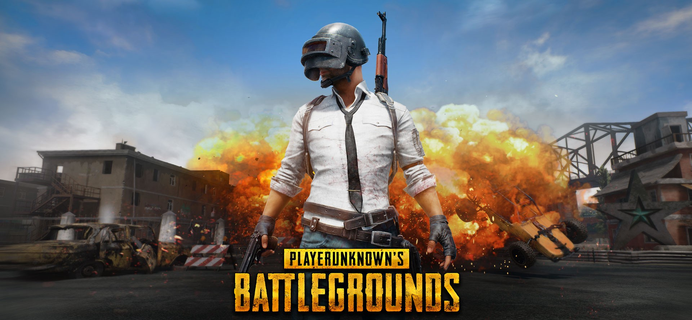

Главный хит 2017 года теряет популярность
03.01.2019
Состоялся выход одного из самых крупных обновлений для Grand Theft Auto V — теперь жители Лос-Сантоса в GTA Online могут начать свою «Ночную жизнь». В город приехали сразу несколько диджеев, а также именитый бизнесмен Гей Тони.
Гость с другого побережья США поможет игрокам не только поможет игрокам открыть собственный ночной клуб, но и научит использовать его в качестве прикрытия для своих грязных подпольных делишек. Управляющим заведений также предстоит заниматься различной рабочей рутиной, касающейся обустройства интерьера внутри здания: выбора мест для диджея, танцовщиц и световых установок. Также предстоит заниматься приёмом на работу новых сотрудников.

Чтобы заполучить диджея в свой клуб, предстоит выполнить специальное задание на своего рода «лояльность», после чего он будет выступать в заведении. При этом все четыре исполнителя не будут доступны сразу: задание Solomun появится сегодня (24 июля), Tale of Us — 31 июля, Dixon — 7 августа, а Black Madonna — 14 августа. Вскоре в Лос-Сантосе также заработает новая радиостанция Los Santos Underground Radio, репертуар которой будет еженедельно изменяться.
На вечеринки можно приглашать до 30 других игроков, при этом вход может быть как бесплатным, так и платным. Будьте осторожны: вышибалы не побоятся применить силу, вышвыривая из клуба безбилетников.
Помимо прочего, вместе с обновлением появилось множество новых предметов, включая автомобили, оружие, одежду и даже дирижабль с патибасом!